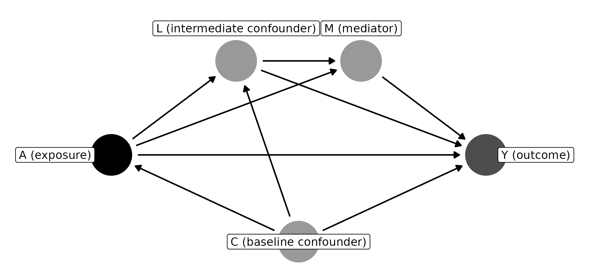

Regression estimates a statistical quantity of interest called an
estimand, which is implied by the model’s controls. As
the homepage shows, controlling for a
mediator transforms a total effect into something close to a direct
effect. The estimand argument allows users to explicitly
target an estimand of interest (Lundberg et al. 2021):
"total" targets the average total effect, and
"direct" targets the average controlled direct effect. This
article explains each column DAGassist adds, how it is
estimated, and what it assumes.
The turnout example supports two different questions:
-
Total effect. How much would turnout change if
income rose by one unit, through every path, including by raising
political interest? In
turnout_data, the answer is 0.50. - Controlled direct effect. How much would turnout change if income rose by one unit while political interest were held fixed? The answer is 0.30.
Requesting both estimands adds a set of columns (minimal and canonical) for each:
DAGassist(turnout_dag,
lm(turnout ~ income + state + age + polint + industry + elect_comp,
data = turnout_data),
estimand = c("total", "direct"),
show = "models", type = "text", verbose = FALSE)| Term | Original | Total Minimal 1 (Raw) | Total Canonical (Raw) | Total Minimal 1 (Weighted) | Total Canonical (Weighted) | Direct (Raw) | Direct (Weighted) |
|---|---|---|---|---|---|---|---|
| income | 0.281*** | 0.493*** | 0.492*** | 0.495*** | 0.493*** | 0.281*** | 0.280*** |
| (0.016) | (0.016) | (0.015) | (0.012) | (0.011) | (0.014) | (0.027) | |
| state | 0.331*** | 0.324*** | 0.332*** | 0.331*** | 0.343*** | ||
| (0.017) | (0.019) | (0.018) | (0.017) | (0.031) | |||
| age | 0.275*** | 0.273*** | 0.267*** | 0.275*** | 0.272*** | ||
| (0.017) | (0.020) | (0.019) | (0.017) | (0.028) | |||
| polint | 0.420*** | ||||||
| (0.014) | |||||||
| industry | -0.017 | -0.010 | -0.017 | -0.014 | |||
| (0.015) | (0.016) | (0.015) | (0.024) | ||||
| elect_comp | 0.500*** | 0.506*** | 0.500*** | 0.476*** | |||
| (0.014) | (0.015) | (0.014) | (0.025) | ||||
| Num.Obs. | 5000 | 5000 | 5000 | 5000 | 5000 | 5000 | 5000 |
| R2 | 0.596 | 0.423 | 0.525 | 0.339 | 0.441 |
- p-value legend: + < 0.1, * < 0.05, ** < 0.01, *** < 0.001.
- Controls (minimal): {age, state}.
- Controls (canonical): {age, elect_comp, industry, state}.
| Column | Question it answers | Estimate | Truth |
|---|---|---|---|
| Original | Whatever your controls imply | 0.28 | |
| Total … (Raw) | Total effect, by regression adjustment | 0.49 | 0.50 |
| Total … (Weighted) | Total effect, by inverse-probability weighting | 0.49–0.50 | 0.50 |
| Direct (Raw) | Controlled direct effect, by sequential g-estimation | 0.28 | 0.30 |
| Direct (Weighted) | The same, with inverse-probability weights | 0.28 | 0.30 |
The original regression’s 0.28 is close to the direct effect, because
it controls for the mediator polint. The weighted
total-effect columns report only the exposure’s effect, so the other
rows are blank.
How the total-effect columns are estimated
The raw columns fit your model with each DAG-derived adjustment set (see Causal roles and adjustment sets). In a linear model with no interactions involving the exposure, the exposure’s coefficient is the average total effect.
The weighted columns take three steps:
- Model the exposure given that set’s controls, using WeightIt. For a binary exposure this is a propensity score; for a continuous one, a generalized propensity score.
- Refit the outcome model with the resulting inverse-probability weights.
- Report the exposure’s average marginal effect, using marginaleffects.
Regression adjustment relies on a correctly specified outcome model; weighting relies on a correctly specified exposure model. When the two agree, as they do here, neither kind of misspecification is driving the result. When they disagree, at least one of the models is wrong.
Weight diagnostics
With estimand = "total", the console report ends with a
block of weight diagnostics:
#> Weight diagnostics:
#> legend: w range reports the min-max weights by group; ESS is kish effective sample size.
#> Total Minimal 1 (Weighted): w range=0.0103..51.45 | ESS (weighted)=1426.96 [LOW_ESS,EXTREME_W]
#> Total Canonical (Weighted): w range=0.007847..52.92 | ESS (weighted)=1239.18 [LOW_ESS,EXTREME_W]w range is the smallest and largest weight.
ESS is the Kish effective sample size,
:
the number of equally weighted observations the weighted sample is
worth. DAGassist flags two problems:
-
LOW_ESS: the effective sample size is less than half the actual sample. -
EXTREME_W: the largest weight is more than 20 times the median weight.
Both flags fire here. The 5,000 observations are worth about 1,400 once weighted, and a handful of observations carry weights near 70. This is common with continuous exposures, whose density-based weights are notoriously variable (Naimi et al. 2014). The weighted estimates are still close to the truth, but they are less precise than the raw ones.
Two remedies are available. Setting
weights_args = list(trim_at = 0.99) caps the weights at
their 99th percentile, trading a little bias for a large reduction in
variance. Alternatively, when the outcome model is credible, give more
weight to the raw columns.
How the direct-effect columns are estimated
The controlled direct effect is the effect of the exposure on the outcome if every unit’s mediators were set to the same value.
In the turnout example, you could estimate it by simply controlling for the mediator. That works because nothing income affects also confounds political interest and turnout. When such a variable exists, an intermediate confounder, every ordinary regression is biased. Controlling for it blocks part of the direct effect; leaving it out opens a non-causal path through the mediator.
Sequential g-estimation avoids both problems in two stages (Acharya et al. 2016). First, it estimates the mediator’s effect on the outcome, controlling for intermediate confounders. Second, it subtracts that effect from the outcome and regresses what remains on the exposure and the baseline covariates only.
DAGassist builds the call to
DirectEffects::sequential_g() from your DAG and formula, in
the form
outcome ~ exposure + baseline | intermediate confounders | mediators:
- Mediator terms are centered, and non-binary mediators also get a squared term, so the first stage isn’t forced to be linear.
- Direct (Weighted) adds inverse-probability weights estimated from the baseline covariates only, never from the mediators.
- Standard errors come from a two-stage sandwich estimator, clustered if you supply a cluster variable.
An example with an intermediate confounder
In the simulated data below, the exposure A affects
L, and L affects both the mediator
M and the outcome Y.
set.seed(1)
n <- 5000
C <- rnorm(n) # baseline confounder
A <- 0.5 * C + rnorm(n) # exposure
L <- 0.6 * A + 0.4 * C + rnorm(n) # intermediate confounder
M <- 0.5 * A + 0.5 * L + rnorm(n) # mediator
Y <- 0.3 * A + 0.4 * M + 0.5 * L + 0.3 * C + rnorm(n) # outcome
sim <- data.frame(A, C, L, M, Y)
sim_dag <- ggdag::dagify(
Y ~ A + M + L + C,
M ~ A + L,
L ~ A + C,
A ~ C,
exposure = "A",
outcome = "Y"
)
Holding M fixed, A still affects
Y directly (0.3) and through L (0.6 × 0.5 =
0.3), so the controlled direct effect with respect to M is
0.60. No ordinary regression recovers it:
coef(lm(Y ~ A + M + C, data = sim))[["A"]] # leaves out L
#> [1] 0.4457124
coef(lm(Y ~ A + M + L + C, data = sim))[["A"]] # controls for L
#> [1] 0.2918876Leaving out L conditions on M, which opens
the non-causal path A -> M <- L -> Y. Controlling
for L blocks A -> L -> Y, which is part
of the direct effect.
By default, DAGassist holds every mediator in
your formula fixed. L is itself a mediator
(A -> L -> Y), so the default estimates the effect of
A through neither L nor M, which
is 0.30:
DAGassist(sim_dag, lm(Y ~ A + M + L + C, data = sim),
estimand = "direct", show = "models", type = "text", verbose = FALSE)| Term | Original | Total Minimal 1 (Raw) | Total Canonical (Raw) | Direct (Raw) | Direct (Weighted) |
|---|---|---|---|---|---|
| A | 0.292*** | 0.921*** | 0.921*** | 0.293*** | 0.305*** |
| (0.018) | (0.018) | (0.018) | (0.014) | (0.019) | |
| M | 0.403*** | ||||
| (0.014) | |||||
| L | 0.516*** | ||||
| (0.016) | |||||
| C | 0.290*** | 0.590*** | 0.590*** | 0.289*** | 0.295*** |
| (0.017) | (0.020) | (0.020) | (0.015) | (0.025) | |
| Num.Obs. | 5000 | 5000 | 5000 | 5000 | 5000 |
| R2 | 0.730 | 0.549 | 0.549 |
- p-value legend: + < 0.1, * < 0.05, ** < 0.01, *** < 0.001.
- Controls (minimal): {C}.
- Controls (canonical): {C}.
To hold only M fixed, tell DAGassist which
variable is the mediator and which is the intermediate confounder with
the acde argument:
DAGassist(sim_dag, lm(Y ~ A + M + L + C, data = sim),
estimand = "direct", acde = list(m = "M", z = "L"),
show = "models", type = "text", verbose = FALSE)| Term | Original | Total Minimal 1 (Raw) | Total Canonical (Raw) | Direct (Raw) | Direct (Weighted) |
|---|---|---|---|---|---|
| A | 0.292*** | 0.921*** | 0.921*** | 0.604*** | 0.616*** |
| (0.018) | (0.018) | (0.018) | (0.016) | (0.022) | |
| M | 0.403*** | ||||
| (0.014) | |||||
| L | 0.516*** | ||||
| (0.016) | |||||
| C | 0.290*** | 0.590*** | 0.590*** | 0.506*** | 0.512*** |
| (0.017) | (0.020) | (0.020) | (0.017) | (0.027) | |
| Num.Obs. | 5000 | 5000 | 5000 | 5000 | 5000 |
| R2 | 0.730 | 0.549 | 0.549 |
- p-value legend: + < 0.1, * < 0.05, ** < 0.01, *** < 0.001.
- Controls (minimal): {C}.
- Controls (canonical): {C}.
Sequential g-estimation now recovers the controlled direct effect of
0.60. acde also accepts x (baseline
covariates) and fe (fixed effects) for full control over
the specification.
Assumptions
Both estimands assume the DAG is right. They also rest on assumptions that no model comparison can check:
- No unmeasured confounding of the exposure and outcome. See Robustness to DAG uncertainty.
- For the direct effect, no unmeasured confounding of the mediator and outcome either. The robustness checks examine the total-effect adjustment sets only, so they won’t flag this.
-
No exposure–mediator interaction.
DAGassist’s first stage has no interaction term, so it assumes the direct effect is the same at every value of the mediator. If you expect an interaction, fitDirectEffects::sequential_g()directly. - Positivity. Every unit must have some chance of receiving each exposure level, given its covariates. The weight diagnostics are the practical check: extreme weights mean some units have almost no comparable counterparts.
Estimand recovery currently supports a single exposure, which cannot be an interaction term. To study an interaction, compute it as its own variable first.
Which estimand to report
- Use
estimand = "total"when you are interested in what happens if the exposure changes, irrespective of mechanisms. - Use
estimand = "direct"when you are interested in how much of the effect is unmediated.